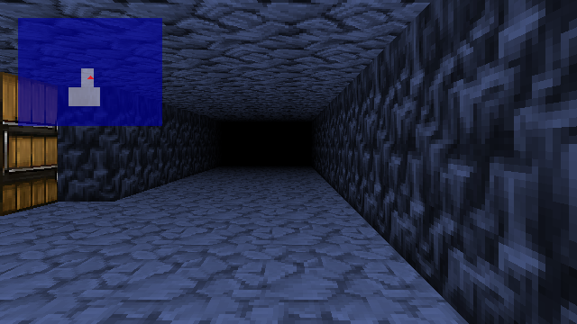
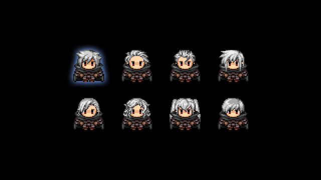
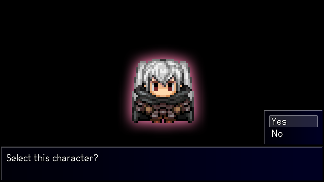
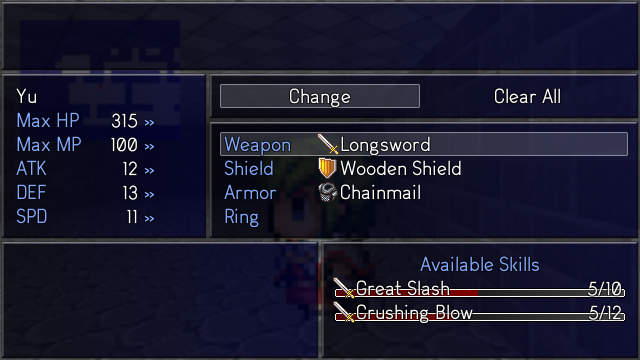
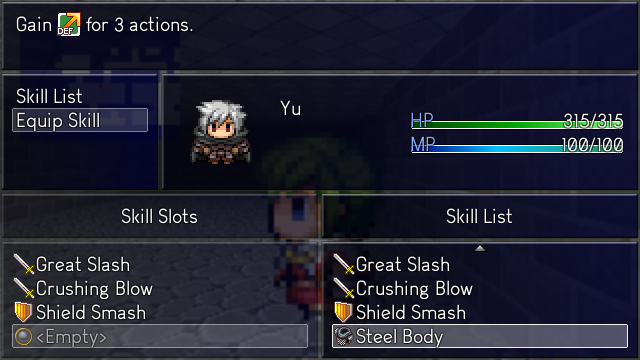
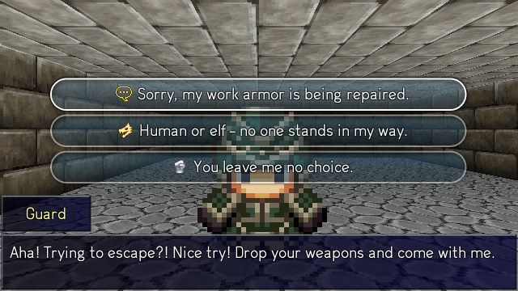
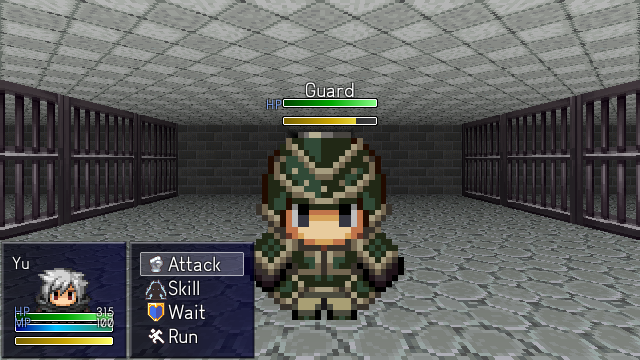
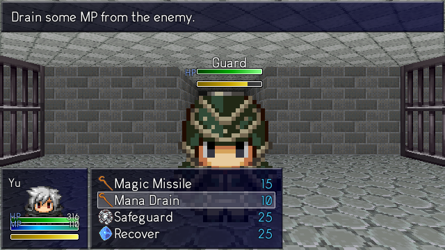
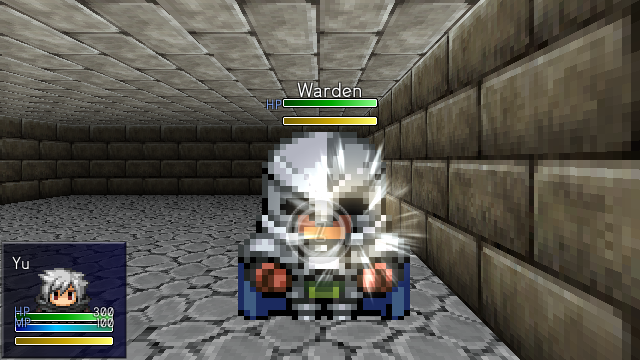
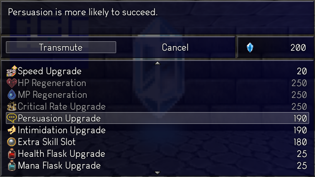

New Project - First-Person RPG WIP
About the Game
Our next game is currently untitled. It is a first-person RPG, sort of like a DRPG, with a fantasy setting. The target length of this game is around 3-4 hours long. The story is still in the concept phase, but most of the gameplay elements have already been set up. I'll be quickly writing about them in this post.
First-Person View
The most defining feature of this game is the First-Person View. This sort of gameplay is not typical in the RPG Maker engine, and I am pleased with how it turned out. You can navigate the pseudo-3D environments using the movement keys. There is a minimap to help you tell where you are going. The zoom and position of the minimap can also be adjusted in the Settings menu.
Character Customization
|  |  |
You can also customize the playable character. Choose from eight different appearances and enter a name for yourself. This is all cosmetic though, since the game is first-person. You can still see yourself in menu screens.
Skills and Equipment
|  |  |
Like in Gate of Providence, skills must be equipped before use. Except, in this game, there are no character levels! So where do battle skills come from? Equipment! Equipping an item allows you to use the skill associated with the weapon/armor. Use the equipment enough and you can learn the skill permanently, and you will be able to use it with other equipment!
Enemy Encounters
Also like Gate of Providence, this game features touch encounters. Enemies will chase you and you will have to fight them. In this game, you have the option to try to talk to them beforehand. You can choose to persuade or intimidate them (indicated by the yellow chatbubble and the growling face) and your choices can determine if you enter battle with an advantage or not, or even avoiding battle altogether. Each enemy has random personality, it may be easier to talk against a meek enemy than an arrogant one.
Battle
|  |  |
In battle, you must wait until the yellow bar fills up until you are allowed to act. Waiting lets you pass your turn, allowing for some changes to the battle timing.
Attacks have timed hits. Press the button in time to deal extra damage or completely block an incoming attack.
Upgrades and Death
Since the game does not have character levels, stats come from equipment and upgrades. Players can choose to pick up some stat upgrades, or save up for a useful perk like permanent HP Regen. The upgrade shop is accessible from various checkpoints in the game, and is also where players respawn when they die (like the Dark Souls bonfires).
Comment / Discuss on Reddit
If you enjoyed reading this post, feel free to follow us on Twitter to get updates on our games and blog posts!